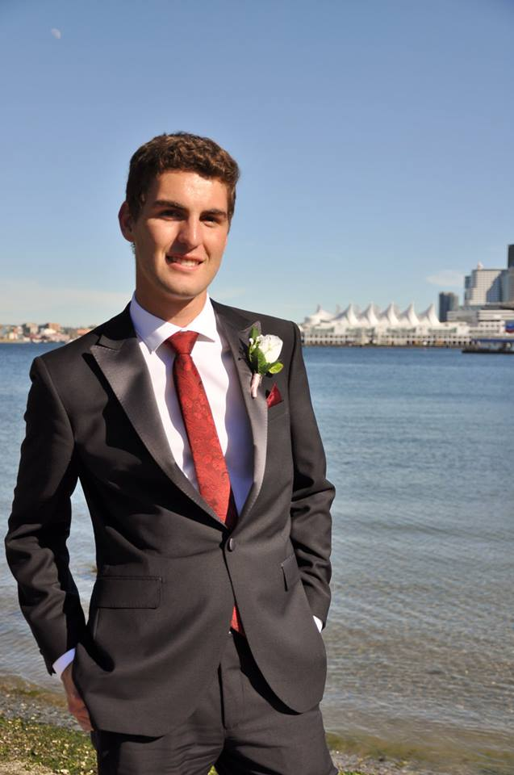

TOREN DOFHER
BASc. Engineering Physics, Minor In Honours Mathematics, University Of British Columbia
Vancouver, BC
tdofher@gmail.com
(778)-926-3947
LinkedIn
Github
Skills
Math
- Complex Analysis
- Real Analysis
- Group Theory
- Variational Calculus
- Probability and Statistics
- Green's Functions
- Applied Linear Algebra
- Ordinary and Partial Differential Equations
- Interested in Cryptography and Quantum Computing
Physics
- Applied Nuclear Physics
- Quantum Physics
- Modern Optics
- Statistical Mechanics
- Classical Mechanics
- Special Relativity
- Advanced Electric and Magnetic Fields
Computer
- C, C++, C#, Arduino
- Python
- Java
- MATLAB
- HTML, CSS
- Javascript
- Microsoft Excel, etc.
- Latex
- Git, Bitbucket
- Unity, Unreal
Electrical
- Radio-Frequency Circuit Design
- ANSYS HFSS Simulation Software
- KiCAD PCB Design Software
- LTSpice, CircuitMaker
- Digital Logic
- Circuit Analysis
- VHDL
- Quartus Prime, Altera
- Control Systems
Mechanical and Prototyping
- SolidWorks
- OnShape
- Waterjet Cutter
- Laser Printer
- 3D Printer
-
Machine Shop:
lathe,
milling machine etc.
Interests
- Mathematics
- Saxophone
- Art History
- Rock-Climbing
- Skiing
- Swimming
- Hiking
- World Travel
- Ultimate Frisbee
- Cryptocurrency